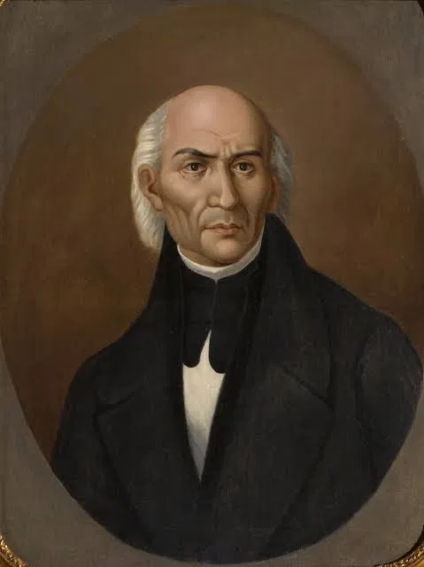
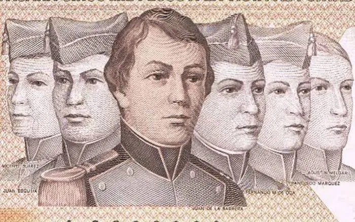

Personajes Ilustres
- Miguel Hidalgo y Costilla: Iniciador de la Independencia con el Grito de Dolores el 16 de septiembre de 1810.
- José María Morelos y Pavón: Caudillo insurgente que redactó los Sentimientos de la Nación.
- Ignacio Allende y Juan Aldama: Militares y líderes clave que organizaron las primeras juntas conspirativas junto a Hidalgo.
- Josefa Ortiz de Domínguez: La Corregidora, pieza fundamental en la organización inicial de la conspiración de Querétaro.
- Vicente Guerrero y Agustín de Iturbide: Encargados de consumar la independencia con el Abrazo de Acatempan y el Plan de Iguala.
- Los Niños Héroes: Cadetes que defendieron el Castillo de Chapultepec el 13 de septiembre de 1847 (Juan de la Barrera, Juan Escutia, Agustín Melgar, Fernando Montes de Oca, Francisco Márquez y Vicente Suárez).

